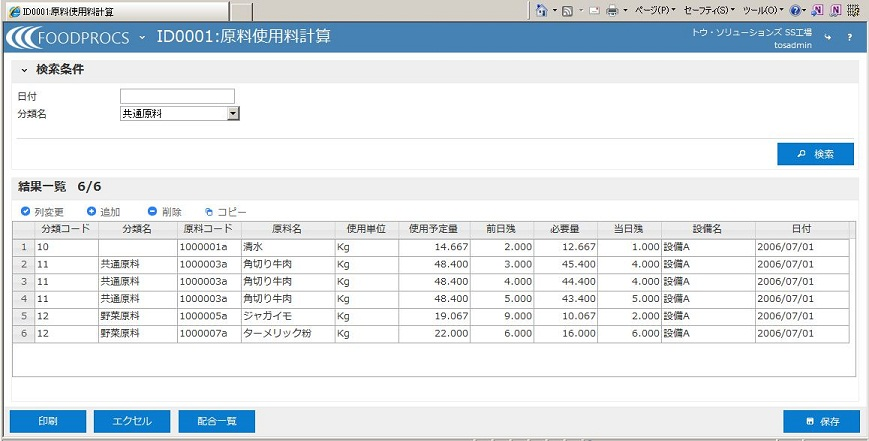

| 【１．概要】 |
| ・指定された日付の原料の使用予定量、必要量を計算して画面に表示し、 その日に原料がどれだけ必要かを確認します。 ・前日残を入力することにより、当日の必要量を確認することも可能です。 また、原料の当日残を入力することにより、現場に残っている原料の管理も行います。 ・原資材メニューから、「原料使用量計算」画面を開きます。 |
| 【２．画面イメージ】 |
|  |
| 【３．操作説明】 |
| ①日付などを指定した後、｢検索｣ボタンをクリックします。 ②指定した日付に製造する全製品に使用する原料の総量が計算され、 画面に表示されます。前日残、当日残がある場合入力を行います。 ③｢保存｣ボタンをクリックして、入力内容を保存します。 |